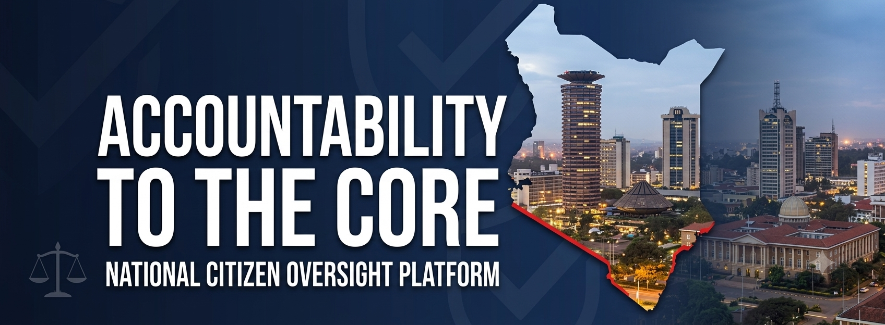

Kenya's National Oversight Ledger
Development is a Right.
Not a Favour.
We track systemic municipal failure, audit public assets, expose corruption, and analyse policy gaps — sourced from oversight bodies, not speculation.
Three Failures
National Vice Tracker
Sourced from IPOA, the National Treasury, EACC, and Transparency International — not speculation.
Police Brutality
127 deaths. IPOA's own casualty figures from the 2024–2025 protest waves, named victims, and unimplemented reforms.
View Dossier →National Debt Crisis
KSh 12.84 trillion in debt. How it climbed past the legal ceiling and why the IMF's outlook keeps trending the wrong way.
View Dossier →Corruption Watch
Score: 30/100. EACC's bribery survey data, a KSh 65M asset seizure, and the commission's actual conviction record.
View Dossier →What We Do
Platform Features
Live Case Tracker
Active dossiers on infrastructure failures, public health crises, and policy gaps — updated by citizen reporters.
AI News Fact-Checker
Paste any claim about Kenyan governance and get an instant verdict powered by the Claude AI — with cited sources.
Citizen Reporting
File evidence-backed reports that enter our admin queue for verification before hitting the public dashboard.
Policy Watch
Tracking legislation like the AI Bill 2026 that directly affects citizen digital rights and developer ecosystems.
Citizen Accounts
Create a free account to track your reports, see their status, and build your reporting history over time.
Admin Console
Reports go through a verification queue before publication — protecting accuracy and preventing misinformation.
Join the Oversight Network
Create a citizen account to submit reports, track their status, and be part of Kenya's growing transparency movement.